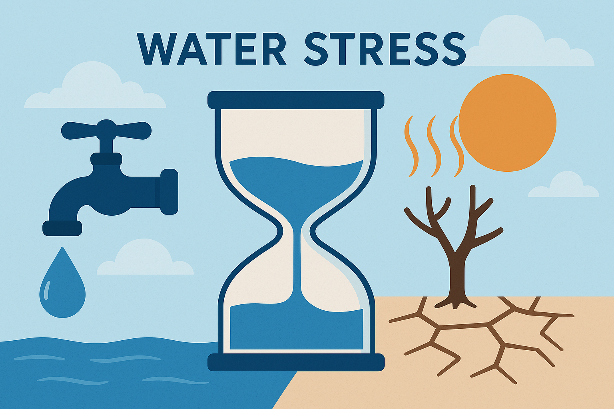
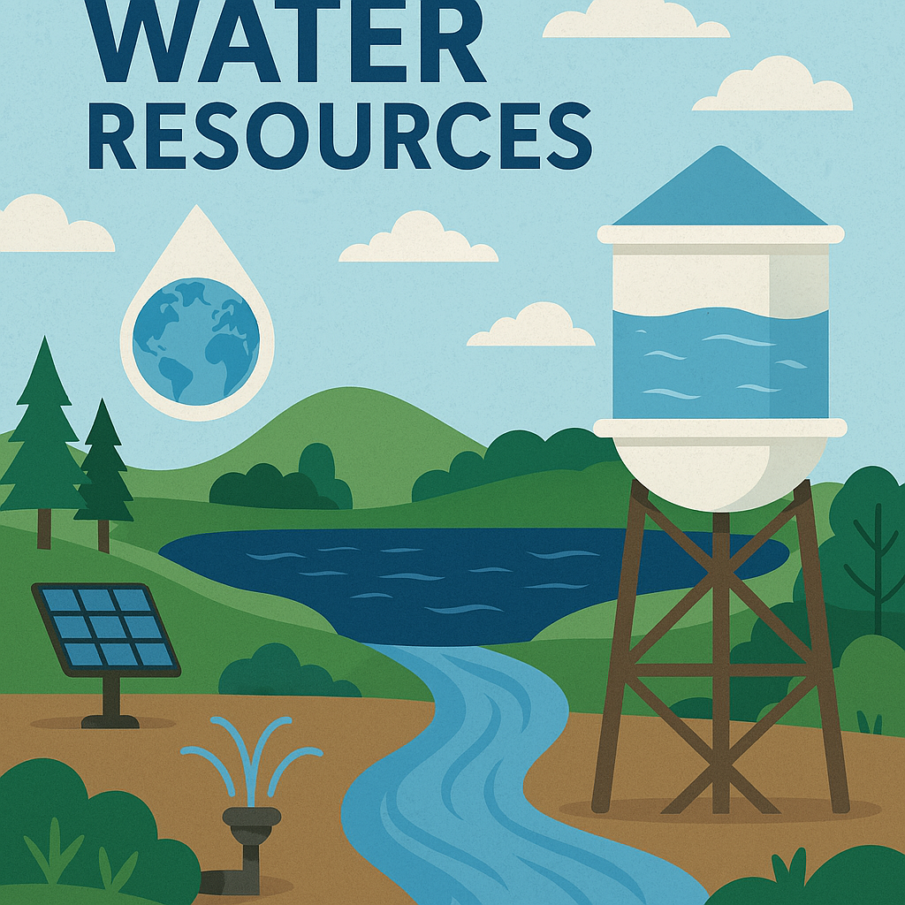
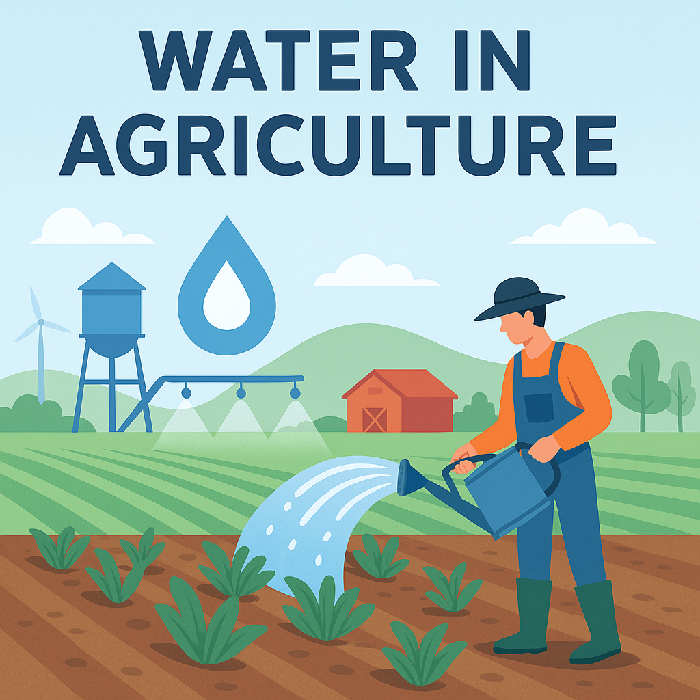
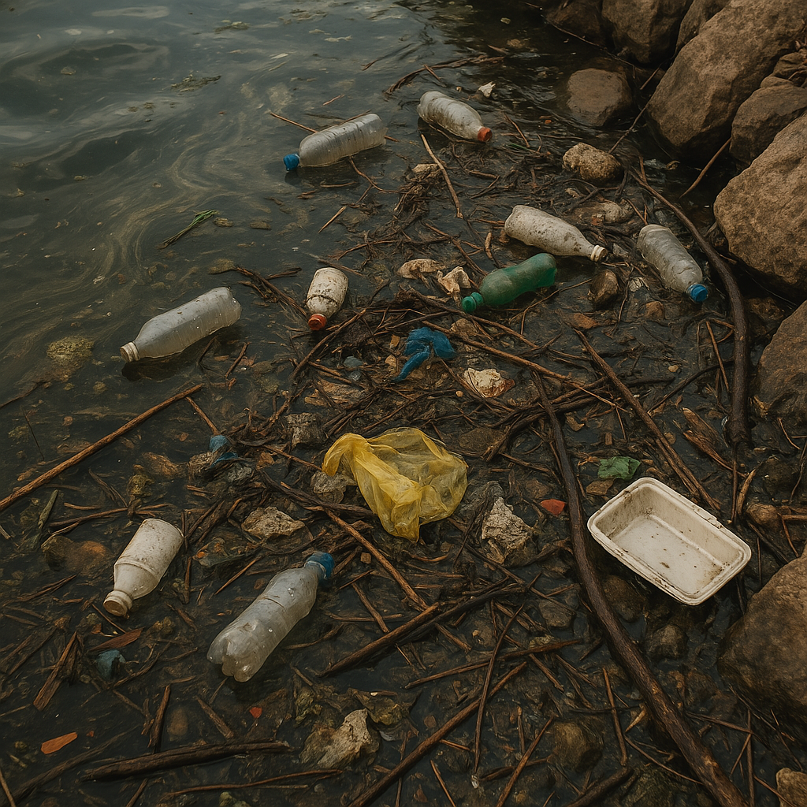

Water Stress in India

India faces severe water stress due to population growth, urbanization, and inefficient water management. Many regions struggle with freshwater availability, affecting both people and the environment.
- Rapid urbanization leading to groundwater depletion.
- Climate change affecting rainfall patterns.
- Industrialization causing excessive water usage.
- Declining river water quality.
- Need for sustainable water conservation techniques.
Water Resources Limitation & Increasing Use

With only 4% of global freshwater resources, India struggles to meet the demands of agriculture, industry, and households.
- Over-extraction of groundwater for irrigation.
- Uneven water distribution across regions.
- Depletion of major river basins.
- Government policies for water conservation.
- Implementation of water recycling and rainwater harvesting.
Water Stress in Agriculture

Agriculture accounts for nearly 80% of India’s freshwater use, making it a key sector for water conservation efforts.
- Dependence on monsoon rains.
- Use of water-intensive crops like rice and sugarcane.
- Need for efficient irrigation methods like drip irrigation.
- Government initiatives for sustainable farming.
- Role of technology in water conservation.
Water Pollution & Contamination

Water pollution in India is a growing concern due to industrial waste, sewage, and chemical runoffs affecting rivers and lakes.
- Major rivers like Ganga and Yamuna facing severe pollution.
- Contamination from agricultural pesticides and fertilizers.
- Lack of wastewater treatment plants.
- Government initiatives like Namami Gange.
- Community-driven efforts for water cleanup.